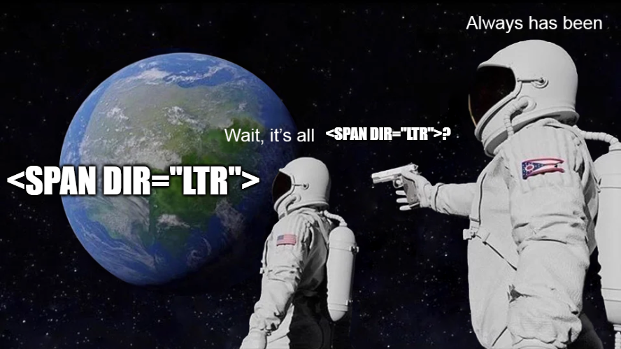
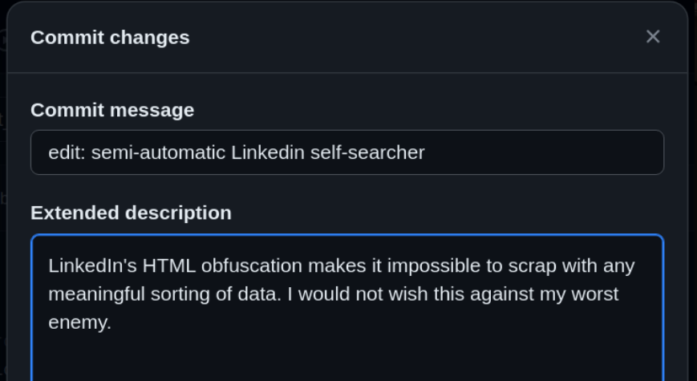
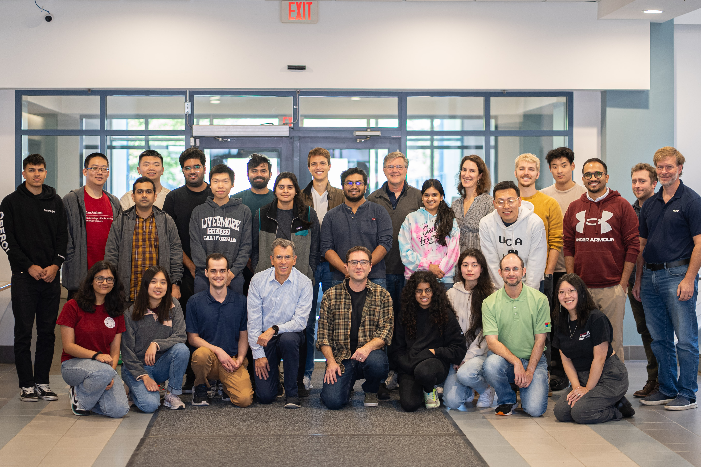

RescueLab Hackathon 2023 Take-Aways
I attended a hackathon hosted by the UMass Amherst Cybersecurity Institute and the UMass Amherst Rescue Lab, the RescueLab Child Safety Hackathon, on October 13, 2023. You can read the initial event advertisement here.
The Rescue Lab's goal is to rescue children from Internet-based victimization and exploitation. You can read more about their goals here. The hackathon itself was primarily focused on building software to make mobile applications safe by design via proper labelling and age rating categorization. Having improperly labeled mobile applications with misleading age ratings can pose as a risk to children because it can expose them to potentially dangerous content not meant for them. So, our goal for the hackathon was to see if we could properly categorize/label data from a myriad of different intended audiences to fit into this table below.

There were five different groups for the hackathon -- each with a specific discipline. I was part of the web-scraping team and we were supposed to grab content from some web application and save it to either a database or local file. We broke up into our groups after we were introduced to the problem statement in the opening presentation, introduced ourselves to our groups, and started figuring out our tasks. After grabbing some apple cider donuts and coffee, we started deciding which applications of interest to scrape.
We wanted to brainstorm potential applications that would all have different intended audiences. Applications like Instagram are more nebulous when it comes to their intended audience and potential age rating, since there are so many different communities within the application already. Google Play Store labels it as 'teenager,' but according to the table above and what we ended up scraping, the content may lead towards some different rating. We were supplied with some tools that already exist to help scrape applications of interest like Instagram and Snapchat, so we started with those.
Instaloader is a really nice command-line tool that allows you to scrape Instagram flawlessly. Unfortunately, it did not work on my system because their Instagram authentication via command-line feature hates me (or so I thought). It worked for my group mates, though, and we successfully were able to scrape a bunch of Instagram posts by querying specific hashtags, Instagram usernames, etc. and it stored them nicely in JSON files and folders. After my lack of luck with Instaloader, I tried to scrape some other web application. I ended up landing on LinkedIn since it has a very professional intended audience, so in theory it should be some 'control' (and it is labeled as 'Everyone' for age ratings).
Before I even started though, one of my friends mentioned to be careful about LinkedIn scraping because of the hiQ v. LinkedIn court case. Essentially, she told me that LinkedIn attempted to sue a lot of groups who were scraping their website. This becomes topical later...
And then begins my personal LinkedIn hell that lasted a total of approximately six hours. I started with some started scraper code that one of our group members made:
import requests
from bs4 import BeautifulSoup
url = "https://example.com/"
res = requests.get(url)
htmlData = res.content
parsedData = BeautifulSoup(htmlData, "html.parser")
print(parsedData.prettify())
Here is where we ran into our first roadblock. LinkedIn's login page requires a email (or username) and password like most authentication services to be able to actually view any content on the site. That means we would be unable to actually scrape any information via the template scraper code above -- we need to actually log-in first.
Firstly, I looked into existing LinkedIn scrapers like this one. All of these scrapers involved some method of automating web browser interaction via Python, so Selenium, a Python package that supports browser automation, was used. Selenium needs a WebDriver for my specific browser to help automate browser interaction, so I went to go look for one for my Chrome/Chromium browser. I never worked with Selenium or WebDrivers but this shouldn't be that bad (right?)
This is where I was stuck for a while. I was looking at the Chromium (ChromeDriver) WebDrivers for Selenium, checking what version of Chromium I was using (v118.0.5993.70) to make sure it was correct, and consistently testing my starter WebDriver code (seen below)...but it still wasn't working!
import requests
from bs4 import BeautifulSoup
from selenium import webdriver
import time
import os
driver = webdriver.Chrome()
driver.get('https://linkedin.com/uas/login') # login page URL
time.sleep(4) # wait for page to load
Initially, I had an issue where I was not allowed to put a string with a path to the ChromeDriver in webdriver.Chrome('PATH'). That feature was deprecated apparently and I kept opening an instance of a Chromium-based browser with "data;" passed into the search bar. My driver didn't work for another two hours until I found this one blogpost that reminded me I used Ubuntu Snap Store to install Chromium initially. This potentially could have been the reason why Instaloader didn't work either. When I found this out, I yelled 'oh my god' at my team's table very loudly and explained the situation to them. It turns out I was not the only person who has faced this issue before (and others spent way longer on the problem...upwards of three days straight). We bonded over our hatred of Snap for a moment and then I went to go celebrate my discovery with a snack (pita chips and hummus).
After finishing my little snack, I fixed my Selenium ChromeDriver instance (since the old method of specifying the executable path directly in the ChromeDriver's arguments, I needed to import ChromeDriver Service and Options. Here is the final (and finally working) driver code:
import requests
from bs4 import BeautifulSoup
from selenium import webdriver
from selenium.webdriver.chrome.service import Service
from selenium.webdriver.chrome.options import Options
import time
import os
os.environ["LANG"] = "en_US.UTF-8"
options = webdriver.ChromeOptions()
service = Service(executable_path='/snap/bin/chromium.chromedriver') # snap chromedriver
driver = webdriver.Chrome(service=service, options=options)
driver.set_window_size(1400, 1400)
driver.get('https://linkedin.com/uas/login')
time.sleep(4) # wait for page to load
Now my ChromeDriver opens Chromium and goes to the LinkedIn log-in page! Very exciting stuff! Now all I needed to do was make sure that I could input the login information (username/email and password) to the specified fields, hit the 'login' button, and then (hacker voice) we're in. The labelling for the fields to input this information was very clear upon examination of the HTML of the page, so things were pretty straight forward. Here's the code for logging in after the ChromeDriver opens up the page:
# logging in
username = driver.find_element(By.ID, 'username')
user_email = input("EMAIL: ")
username.send_keys(user_email)
password = driver.find_element(By.ID, 'password')
user_password = input("PASSWORD: ")
password.send_keys(user_password)
driver.find_element(By.XPATH, '//button[@type="submit"]').click()
To reuse the same joke: (hacker voice) I'm in. Now we're finally logged into LinkedIn...and we did it all via the power of command-line! Now, we need to search for whatever query we're looking for (for example, some company like Meta) and then scrape the posts that we stumble upon. After poking around the HTML code for the feed page, I found out that the search bar class is called 'search-global-typeahead__input'. Also, LinkedIn doesn't have a "search" button, so we need to simulate hitting the enter key in order to actually search anything after inputting our query in the search bar.
# search
from selenium.webdriver.common.keys import Keys
from selenium.webdriver.common.by import By
search_input = input("SEARCH FOR?: ")
search_bar = driver.find_element(By.CLASS_NAME, 'search-global-typeahead__input')
search_bar.send_keys(search_input)
search_bar.send_keys(Keys.RETURN)
time.sleep(20)
Now we can search for things on LinkedIn all from only the command-line! Now we can just find all the HTML elements, like classes and IDs, that house all of the text of LinkedIn posts! Right? Right...?
...So it turns out all of the descriptions of every single post on one's feed for example is not housed within any unique identifier (i.e. class, id, etc...) and is in a SPAN instead. This includes every piece of text on the page as well, like the text 'Home', 'My Network', 'Jobs', etc. under every icon on the top bar. Everything is span dir="ltr". And the HTML live updates whenever you scroll, so if you built a scraper, you would need to make sure that you simulate a scroll for a certain percentage of the scroll-height before parsing the HTML for that section, too.
If the code was not rendered live every time you visit the page and we just had the raw HTML, the following code with the ChromeDriver and everything would have worked with a static site:
# getting current url's html data
current_url = driver.current_url
res = requests.get(current_url)
html_data = res.content
soup = BeautifulSoup(html_data, "html.parser")
# parsing the posts
dat = []
results = soup.find_all('span')
for item in results:
child_nodes = item.findChildren("span",attrs={'dir':'ltr'})
for node in child_nodes:
if node.text is not None:
dat.append(node.text)
driver.quit()
After this discovery of what seems like waaaay harder of a task than anticipated, I did something very similar to my last line of code: my DRIVE to continue working on this scraper ceased and I QUIT. I only had 30 minutes left of the hackathon to come up with something, so I attempted to fiddle around with simulating some scroll simulator which didn't end up working.
Unfortunately, I was unable to finish my LinkedIn scraper because of how difficult the task of actually parsing LinkedIn posts was, but at least I made some semi-automatic LinkedIn search via command-line. If you ever wanted to search something on LinkedIn without actually opening any page or opening a browser instance, you can run this code and it'll do the job! Here was my one (and only) commit message to my web-scraping group's GitHub repo:
Despite my LinkedIn struggle commentary, I thoroughly enjoyed RescueLab Hackathon 2023. I met a lot of really cool new people, especially since most of them were MITRE employees, Pixel Forensics employees, or graduate students. I learned new skills (web-scraping) that I never took a stab at before and learned a lot in the whole nine hours the event lasted. The pita chips and hummus were also really good. Here are the news articles that were posted by the Cybersecurity Institute and Manning College of Information and Computer Sciences (CICS) about the hackathon.
My take-aways are as follows:
- Snap stole hours of my life and ruined everything I hold dear
- The solution to failed attempts at suing people is to obfuscate your site's live-rendered code as much as possible
- Do not ever try to make a LinkedIn scraper again ever ever ever EVER
